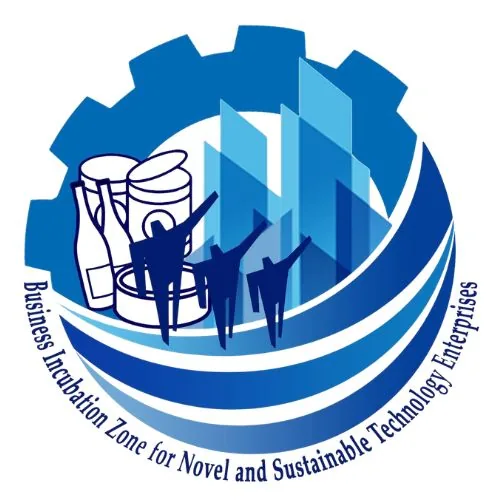

BIZNEST Technology Business Incubator (CSU)
Cagayan State University · Region II
BIZNEST (Business Incubation Zone for Novel and Sustainable Enterprises) is hosted by Cagayan State University in Tuguegarao City, Cagayan and serves Region II (Cagayan Valley). Funded by DOST-PCIEERD, BIZNEST focuses primarily on entrepreneurs with food and post-harvest technologies — its banner program is Food and Post-harvest Technology — connecting innovators in the Cagayan Valley to the national technology business incubation ecosystem.
- Category
- Technology Business Incubator
- Host institution
- Cagayan State University
- City
- Tuguegarao City
- Region
- Region II
- Operating status
- Operating
About the Center
BIZNEST serves as the lead incubator of the SINAG Cagayan Valley Consortia under DOST's ReSEED (Regional Startup Enablers for Ecosystem Development) initiative, positioning Cagayan State University as the regional anchor for startup development and agri-food innovation in Region II. The incubator supports technology-based startups and MSMEs in food processing, post-harvest handling, and agri-based ventures, connecting them to commercializable DOST and university-developed technologies.
As part of CSU's broader innovation ecosystem, BIZNEST works alongside the university's research and extension programs to translate agri-food research outputs into viable businesses — building a generation of Cagayan Valley technopreneurs equipped to compete in regional and national markets.
Programs & Services
- Food & Post-Harvest Technology Incubation — Dedicated incubation support for startups and MSMEs in food processing, value-added agricultural products, and post-harvest technology, using proven DOST-PCIEERD innovations
- SINAG ReSEED Consortia Leadership — BIZNEST leads the Cagayan Valley regional startup enabler consortia under DOST's ReSEED program, coordinating innovation support across Region II partner institutions
- Business Development & Mentorship — Coaching on business planning, product commercialization, market positioning, and financial management for early-stage food and agri technology enterprises
- IP & Technology Transfer — Guidance on intellectual property protection, technology licensing, and documentation support for research-based innovations entering commercial development
- Incubation Space & Shared Facilities — Access to office space, co-working areas, and laboratory facilities within the CSU incubator for incubatees developing and refining their products
- DOST Funding & Startup Linkages — Facilitation of connections to DOST-PCIEERD grants, startup financing, industry networks, and market partners for incubatee enterprises
Contact
Sources & references
- dost.gov.ph/innovationmaps/TBI.kml
- facebook.com/csu.biznest
- halohalohub.com/post/dost-5th-national-tbi-summit-renews-philippine-governm…
Details are drawn from public records and the sources above, July 2026.
Startupreneur Innovation Hub · synced from the Notion catalog (July 2026) · status: published.